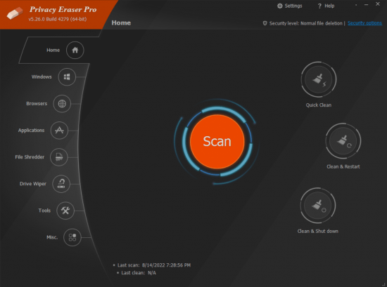

============================

Stats
Title: Privacy Eraser Pro 5.28.2.4336 Full Final Version
Category: Apps
Type: PC Software
Language: English
Total size: 8.8 MB
Uploaded By: Rainbowrave
============================
Info:
!!! Remember I don't own or edit anything on links that might be on this torrent!!!

Privacy Eraser is an all-in-one privacy suite that protects your privacy by cleaning up all your Internet history tracks and past computer activities. It supports popular web browsers such as Internet Explorer, Mozilla Firefox, Google Chrome, Safari and Opera. With simply one click, Privacy Eraser can quickly erase the Internet cache, cookies, browsing history, address bar history, typed urls, autocomplete form history, saved password and index.dat files of your browser, and Windows' run history, search history, open/save history, recent documents, temporary files, recycle bin, clipboard, taskbar jump lists, dns cache, log files, memory dumps, error reporting and much more.
Furthermore, Privacy Eraser supports plug-ins to extend cleaning features, you can easily delete the tracks left by any applications by making your own plug-ins. Privacy Eraser embedded more than 250 FREE plug-ins which supports the most popular programs such as ACDSee, Adobe Reader, Microsoft Office, WinZip, WinRAR, Windows Media Player, VLC Player, eMule, BitTorrent, Google Toolbar and many others.
Privacy Eraser works on Microsoft Windows 8.1/8/7/Vista/XP/2012/2008 (32/64-bit) and supports Microsoft Windows FAT16/FAT32/exFAT/NTFS file systems, completely implements and exceeds the US Department of Defense and NSA clearing and sanitizing standard, to gives you confidence that once erased, your file data is gone forever and can not be recovered.
Major Features:
Internet Explorer, Mozilla Firefox, Google Chrome, Safari and Opera
Cleans Internet cache (Temporary Internet Files ), Internet history, cookies, typed urls, download history, autocomplete/autofill form history, saved password, etc.
Windows
Cleans run history, search history, open/save history, recent documents, temporary files, recycle bin, clipboard, taskbar jump lists, dns cache, log files, memory dumps, error reporting, etc.
Third-party Applications
Over 250 FREE, pre-configured plug-ins to clean the tracks of popular applications. You can also extend cleaning features by making your own app plug-ins. This allows you to easily remove the history traces left by any applications.
Security Level
Supports Simple zero-fill (1 pass), US DoD 5220.22-M (3 passes), US DoD 5220.22-M (ECE) (7 passes), Peter Gutmann (35 passes) and custom wipe methods.
File Shredder
Permanently erases specified files and folders from your PC beyond recovery.
Drive Wiper
Securely wipes spare and hidden data areas on your drives. All free clusters on the drives, including the contents of deleted files and folders, will be wiped like a new drive.
Real-time Monitoring
You can set Privacy Eraser to run every time you close your browser, or you can set it to monitor your Windows system in the background and detect when to clean to free up the disk space.
And much more...
Key Benefits:
Easy to use
Cleans up all your Internet history tracks and past computer activities with one click.
Privacy
Permanently deletes Internet history, visited urls, saved user names and passwords from a public or shared computer.
Security
Completely implements and exceeds the US Department of Defense and NSA clearing and sanitizing standard, to gives you confidence that once deleted, your file data is gone forever and can not be recovered.
Space
Recovers and maximizes hard drive space by deleting unnecessary files.
Speed
Speeds up Internet surfing and browsing, boosts your PC's performance and stability making it much faster and efficient!
AntiVirus Scanned Result:
Setup : https://www.virustotal.com/gui/file/b7259df7840395a48ec5049f304f889716919ccc59e33431b3d2531a92af8632
============================
Stats
Title: Privacy Eraser Pro 5.28.2.4336 Full Final Version
Category: Apps
Type: PC Software
Language: English
Total size: 8.8 MB
Uploaded By: Rainbowrave
============================
Info:
!!! Remember I don't own or edit anything on links that might be on this torrent!!!

Privacy Eraser is an all-in-one privacy suite that protects your privacy by cleaning up all your Internet history tracks and past computer activities. It supports popular web browsers such as Internet Explorer, Mozilla Firefox, Google Chrome, Safari and Opera. With simply one click, Privacy Eraser can quickly erase the Internet cache, cookies, browsing history, address bar history, typed urls, autocomplete form history, saved password and index.dat files of your browser, and Windows' run history, search history, open/save history, recent documents, temporary files, recycle bin, clipboard, taskbar jump lists, dns cache, log files, memory dumps, error reporting and much more. Furthermore, Privacy Eraser supports plug-ins to extend cleaning features, you can easily delete the tracks left by any applications by making your own plug-ins. Privacy Eraser embedded more than 250 FREE plug-ins which supports the most popular programs such as ACDSee, Adobe Reader, Microsoft Office, WinZip, WinRAR, Windows Media Player, VLC Player, eMule, BitTorrent, Google Toolbar and many others. Privacy Eraser works on Microsoft Windows 8.1/8/7/Vista/XP/2012/2008 (32/64-bit) and supports Microsoft Windows FAT16/FAT32/exFAT/NTFS file systems, completely implements and exceeds the US Department of Defense and NSA clearing and sanitizing standard, to gives you confidence that once erased, your file data is gone forever and can not be recovered. Major Features: Internet Explorer, Mozilla Firefox, Google Chrome, Safari and Opera Cleans Internet cache (Temporary Internet Files ), Internet history, cookies, typed urls, download history, autocomplete/autofill form history, saved password, etc. Windows Cleans run history, search history, open/save history, recent documents, temporary files, recycle bin, clipboard, taskbar jump lists, dns cache, log files, memory dumps, error reporting, etc. Third-party Applications Over 250 FREE, pre-configured plug-ins to clean the tracks of popular applications. You can also extend cleaning features by making your own app plug-ins. This allows you to easily remove the history traces left by any applications. Security Level Supports Simple zero-fill (1 pass), US DoD 5220.22-M (3 passes), US DoD 5220.22-M (ECE) (7 passes), Peter Gutmann (35 passes) and custom wipe methods. File Shredder Permanently erases specified files and folders from your PC beyond recovery. Drive Wiper Securely wipes spare and hidden data areas on your drives. All free clusters on the drives, including the contents of deleted files and folders, will be wiped like a new drive. Real-time Monitoring You can set Privacy Eraser to run every time you close your browser, or you can set it to monitor your Windows system in the background and detect when to clean to free up the disk space. And much more... Key Benefits: Easy to use Cleans up all your Internet history tracks and past computer activities with one click. Privacy Permanently deletes Internet history, visited urls, saved user names and passwords from a public or shared computer. Security Completely implements and exceeds the US Department of Defense and NSA clearing and sanitizing standard, to gives you confidence that once deleted, your file data is gone forever and can not be recovered. Space Recovers and maximizes hard drive space by deleting unnecessary files. Speed Speeds up Internet surfing and browsing, boosts your PC's performance and stability making it much faster and efficient! AntiVirus Scanned Result: Setup : https://www.virustotal.com/gui/file/b7259df7840395a48ec5049f304f889716919ccc59e33431b3d2531a92af8632